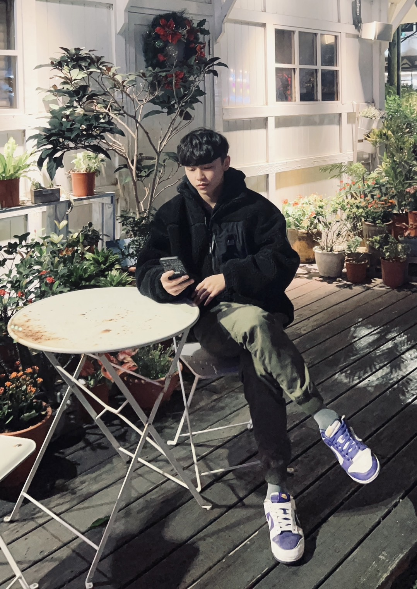

賴冠臻-前端
藉由這次的期末專案深知自己還有很多的不足，但是也跟夥伴們學習到很多，前端還有有很多的技巧可以學習，不論是美編還是排版還是動畫等等都可以在精進讓網頁更好看。這次的期末專案時常會因為加上一些動畫的時候影響了先前的畫面和功能，我認為這是我們花最久的時間克服的地方，下次寫網頁不知道是甚麼時候了，但是還是希望自己在多研究這領域。
周佳穎-前端
我覺得這次專案做得很開心，也學到許多新的製作網頁技巧，例如我很喜歡網頁上有使用者互動的功能，所以做了許多滑鼠移動時會產生的動畫效果，也學了購物車收合側邊欄等功能，學校課程能教的內容有限，要做出一個好的網站，還有許多功能要自己去探索，而我也開始習慣在網上買東西時，會去注意別人的網站是怎麼呈現的，看到有興趣的就會在google查詢相關教學，每當學會一項新功能時，就會感到很有成就感，我們還有很多東西需要學習，相信透過我們的努力之後會越做越好!
孫珮珊-前端
做這個專案要用到很多課堂學到的知識還有自己另外學習的特效來完成，
過程常常會有跑版及不成功的問題，需要靠不斷地嘗試才能達到想要的效果。
很感謝我的組員常幫我解決一些疑難雜症，讓網頁可以呈現的更好。
也讓我知道完成一項專案不僅是需要技術學習也需要團隊合作。
李芝穎-後端
這門課程讓我瞭解到後端在網頁開發中的重要性，並學會了如何選擇合適的技術來滿足特定需求。透過實際的實作專案，我鍛煉了自己的問題解決能力和程式設計技巧。
陳奇炫-後端

這次網程的期末專題跟之前的多媒體相比真的難上許多，還要使用資料庫的內容一起連結來處理一寫問題，真的是把我難到不知道自己在做什麼了，尤其是時間還非常的不夠，真的是寫到懷疑人生，但好在有寫出來能夠按時完成工作，也是算一件開心的事情了。
王安純-後端
這學期修了網路程式設計，感覺後端比上學期修的前端要難許多，但是能學習到許多豐富的JAVAScript程式著實令人感到富足，在期末也寫出了一個後台系統，雖然還有很多進步空間……希望日後能更進一步的學習有關JSP的知識！